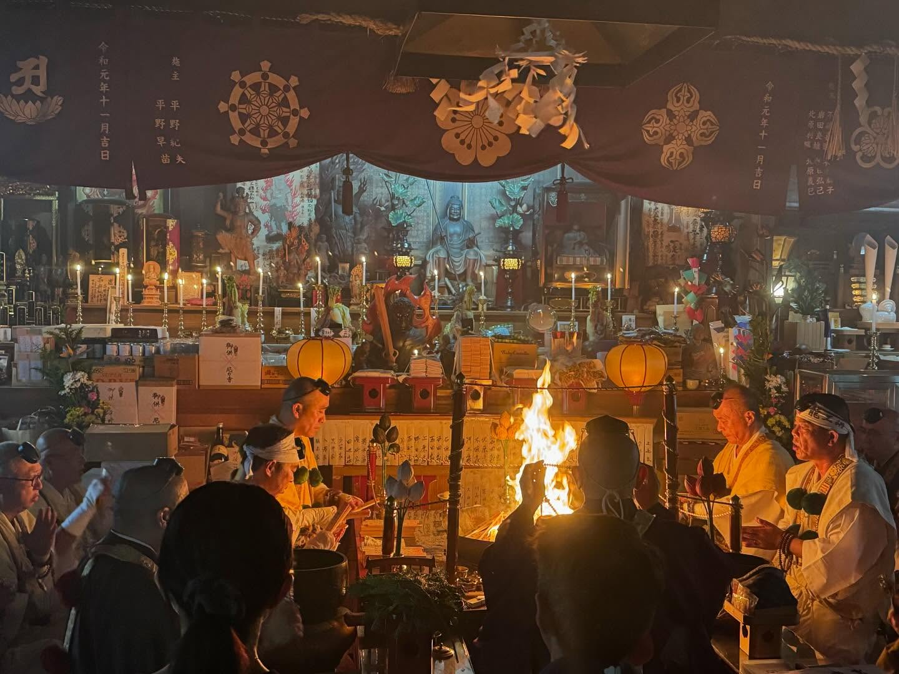
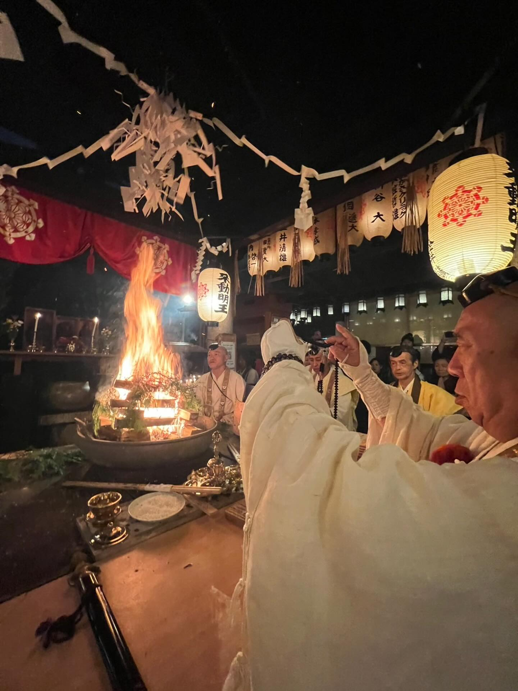
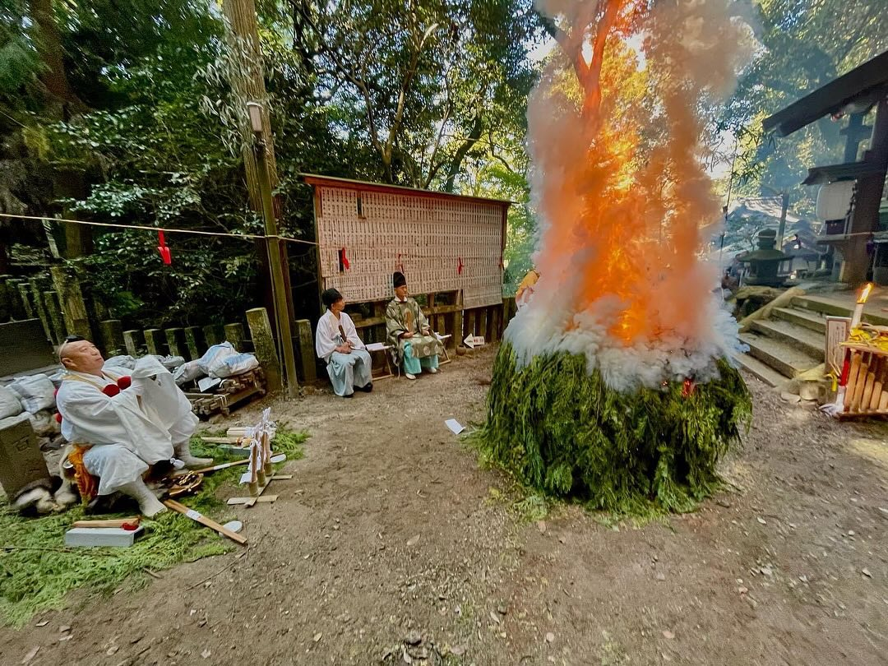

勝妙院について
勝妙院は、奈良・吉野にある修験道の根本道場「櫻本坊」にゆかりを持つ別院として、
1980年3月より大阪市東淀川区相川の地に開かれました。
高野山真言宗、金峯山修験本宗の寺院であり、単立の神社でもあります。
年中行事
毎月18日 午後1時 ：護摩供
1/18 午後1時 ：初護摩供、風呂敷護摩供
11/18 午後1時 ：不動山勝妙院大祭
護摩は本堂で行っております。
護摩終了後は お不動様の残りを頂けますので気軽にお越しください。
※月によって開催時刻が前後する場合があります。
写真館
最新の投稿はこちら：
行事の様子



ご祈祷・お供養・お祓いのご案内
※近畿圏を中心に、現地への出張奉仕を承っております。
仏式（出張・本堂）
- 家内安全・身体健全
- 商売繁盛・事業繁栄
- 厄除け・方位除け
- 合格祈願・良縁成就
- 先祖供養
- 水子供養
- 年忌法要
神式（出張・本堂）
- 地鎮祭（建築工事の安全祈願）
- 家祓い・清祓（入居前や移転時のお清め）
- 事務所清祓・店舗清祓
- 車祓い（車清祓）
- 井戸祓い・伐採祓い（樹木のお清め）
- 神棚祭（神棚の設置・撤去）
- 神葬祭（神道形式の葬儀・法要）
※出張範囲や初穂料の詳細については、お電話にてお気軽にご相談ください。
アクセス
〒533-0007 大阪府大阪市東淀川区相川３丁目２−３
勝妙院
ご連絡・お問合せ
ご祈祷・お供養・お祓いのご相談はお電話にて承ります。
受付時間：8:30～16:00
電話：06-6340-3249
高井 良勝